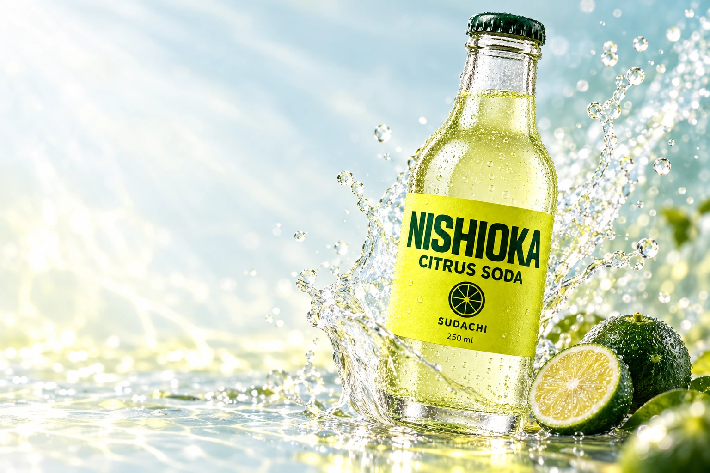
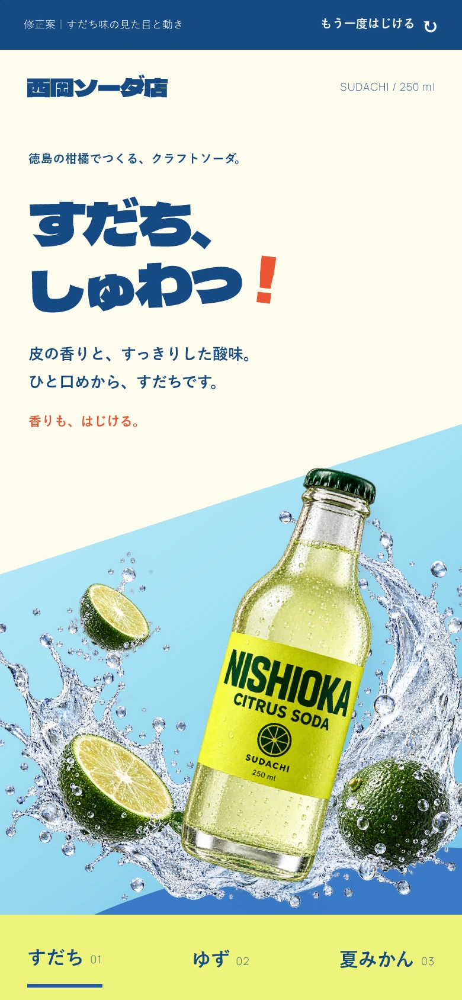
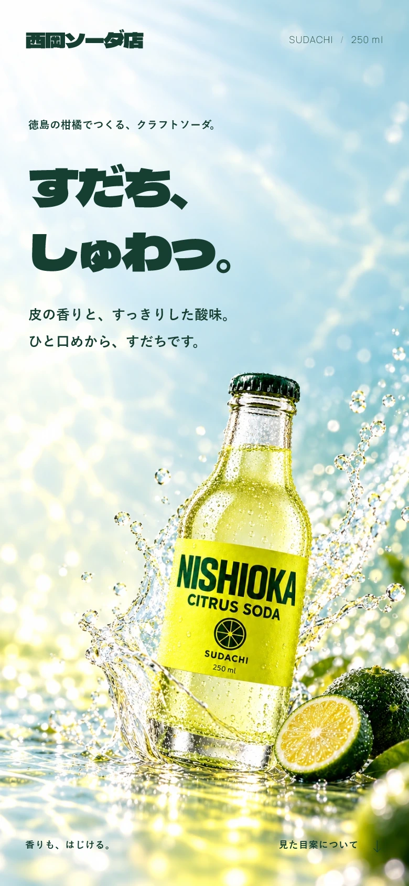

CITRUS SODA SUDACHI 250 ml
徳島の柑橘でつくる、クラフトソーダ。
すだち、しゅわっ。
皮の香りと、すっきりした酸味。
ひと口めから、すだちです。
香りも、はじける。見た目案について
見た目の確認 / 2026.10.27
色を、光と質感でつなぐ。
背景を色の面で分ける構成から、果実・瓶・飛沫を同じ光の中で見せる構成へ変えました。果実の黄色と緑、水の淡い青を、反射と透ける光でつないでいます。
今回は冒頭の静止画の確認です。炭酸の動きも付ける方針は変えていません。この見た目が決まってから、飛沫と光が広がる動きを組みます。




自主制作の架空ブランドです。商品は販売していません。